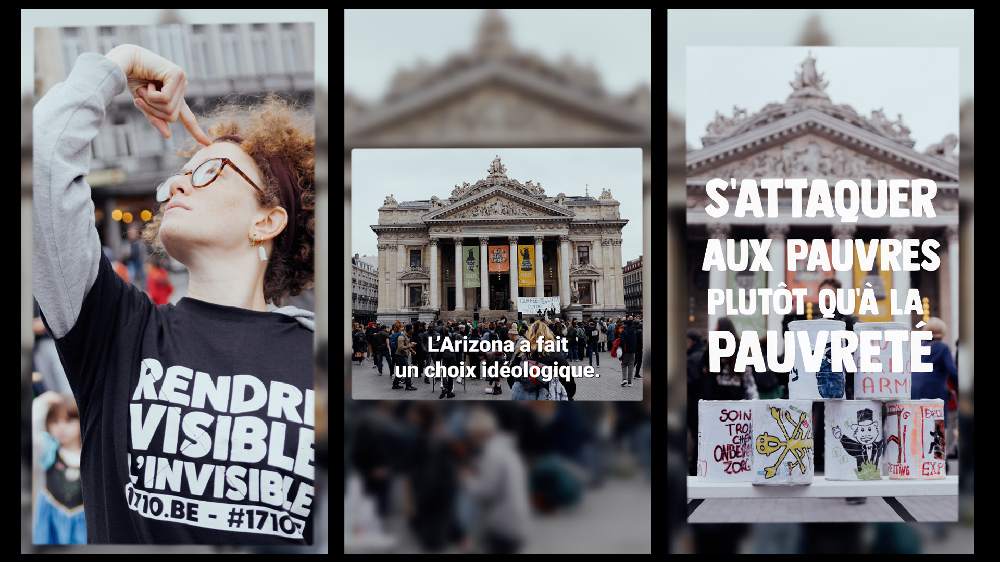
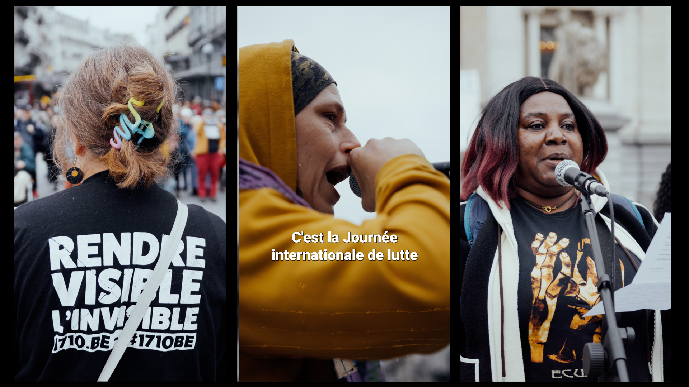
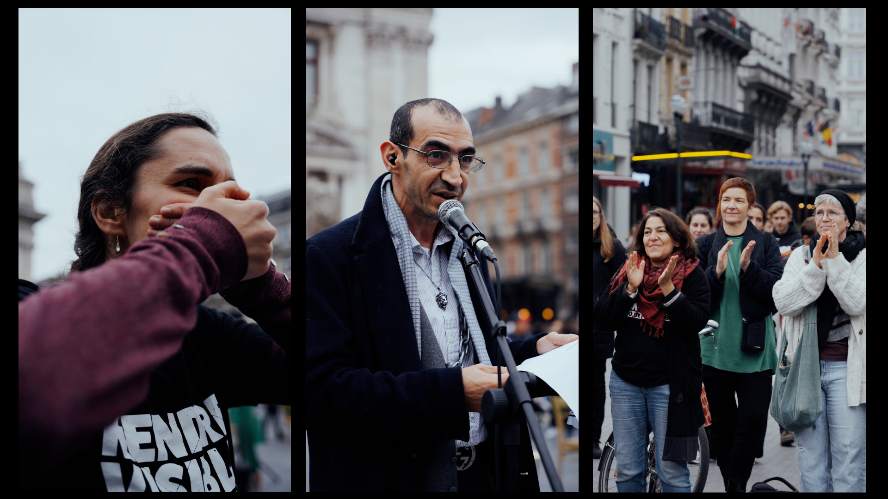
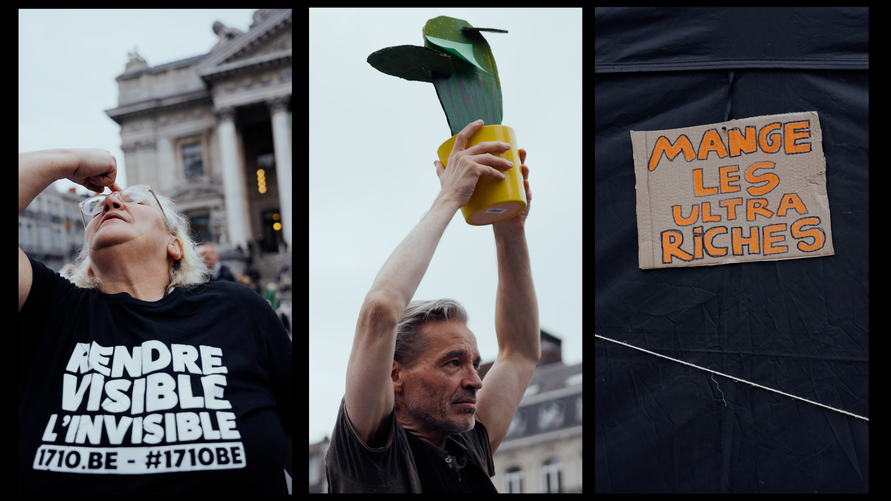
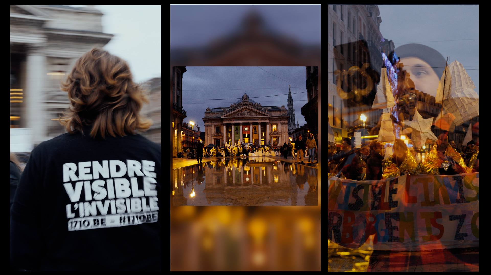

Rendre Visible l'Invisible : Journée mondiale du refus de la misère
Aftermovie / l'Arizona s'attaque aux pauvres plutôt qu'à la pauvreté
Nous étions à nouveau présent cette année à l'événement du front Rendre Visible l'Invisible dans le cadre de journée mondiale du refus de la misère afin de filmer l'événement. Cette année, le front se mobilisait contre les mesures antisociales du gouvernement Arizona qui va fragiliser encore plus les plus précaires.
Réalisation: Jonas Guyaux et Emma Landet-Lacoste




